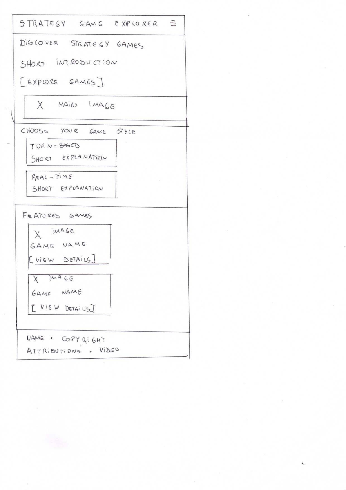
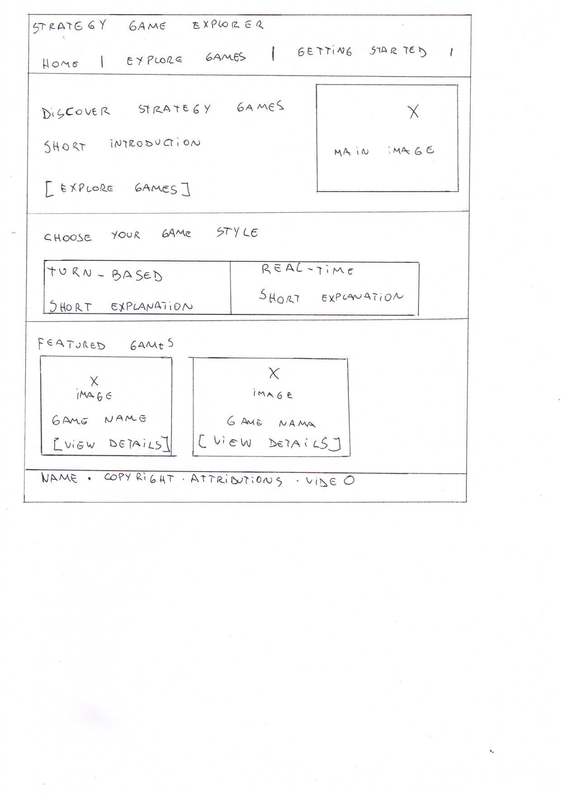

Site Name
The name is Strategy Game Explorer. I chose it because the website will help visitors explore strategy games and find one they would like to try. It is short and explains the main topic.
Site Purpose
This website will introduce strategy games to new players. Visitors will learn the difference between turn-based and real-time games, browse a collection of games, and read simple tips for getting started.
The main audience is people who are interested in strategy games but do not know where to begin. Visitors will be able to filter games, view more details, save favorites, and complete a form about their gaming preferences.
Scenarios
- What is the difference between a turn-based game and a real-time strategy game?
- Which strategy games are a good starting point for a beginner?
- Can I find a single-player game and save it to look at later?
Planned Pages
- Home: A short introduction, an explanation of the main game styles, and a few featured games.
- Explore Games: A collection of at least 15 games with filters, details, and a favorites option.
- Getting Started: Beginner tips and a form where visitors can choose their preferred game style and experience level.
A separate confirmation page will display the submitted form information. An attributions page will list sources for game information and images. These extra pages will not count as the three main pages.
Color Scheme
The site will use a small set of colors. This planning document uses the same colors.
- Gold — #F2C14E: Buttons, selected links, and small accents, with navy text.
- Cream — #F7F5EF: Main page background.
- White — #FFFFFF: Content sections and text on the navy background.
Typography
Arial, sans-serif: Used for all text. Headings will be bold, and paragraphs will use regular weight. Arial is easy to read and does not need an extra font download.
Example Heading
Example paragraph: Start with a short tutorial and learn one game mechanic at a time.
Planned Features
I will store the game information in a local JSON file and load it using fetch with async/await and try/catch. Each game card will show its name, strategy type, platform, and player mode.
JavaScript will create the cards, filter the list, open a details dialog, and save favorite games with localStorage. I will use array methods, template literals, event listeners, and small JavaScript modules.
The layout will work on phones and computers. Images will have width and height attributes, and images below the first screen will use lazy loading. I will check keyboard navigation, color contrast, and page performance.
Home Page Wireframes
These hand-drawn sketches show the home page layout on small and large screens.
Small Screen
The sketch shows the site name and menu button at the top, followed by an introduction and an Explore Games button. Game-style information and featured game cards appear in a single column. The footer is at the bottom.

Large Screen
The sketch shows the site name and horizontal navigation at the top. The introduction and main image sit side by side. Game styles and featured games use rows of cards, with the footer below them.
